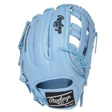
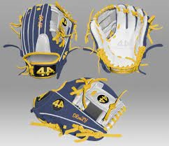
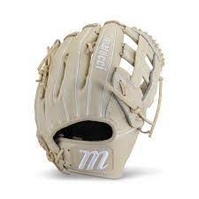

Best Gloves

Rawlings is one of the most common glove in the game. Even though it has a high price they have top tear quality, performance, and durability.
Rawlings

44 is the best glove you can get that is afforable and it still can compete with expensive brands.
44

Marruci gloves look pretty clean and have really high quality
marucci
Back